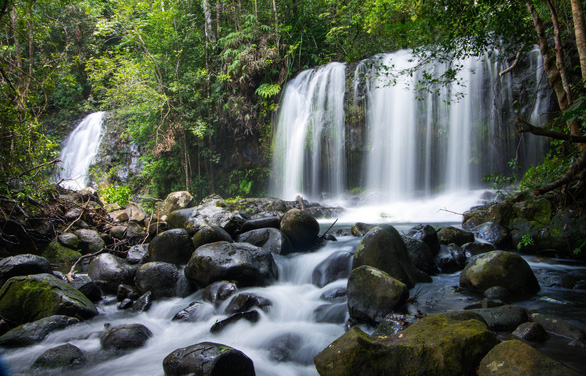

Việt Nam có thêm 2 Khu dự trữ sinh quyển thế giới
Tối 15-9 (giờ Việt Nam), hai khu dự trữ sinh quyển của Việt Nam là Núi Chúa (tỉnh Ninh Thuận) và Kon Hà Nừng (tỉnh Gia Lai) đã chính thức được công nhận là Khu dự trữ sinh quyển thế giới.
Trong khuôn khổ cuộc họp của Hội đồng điều phối quốc tế Chương trình Con người và sinh quyển (CIC-MAB) đang diễn ra từ ngày 13 đến 17-9 tại Nigeria, 22 khu dự trữ của 20 nước và nhóm nước đã được đưa ra xem xét để công nhận Khu dự trữ sinh quyển thế giới.
Hai khu sinh quyển ở Việt Nam là Núi Chúa thuộc tỉnh Ninh Thuận và Kon Hà Nừng của tỉnh Gia Lai đã được chính thức ghi danh trong dịp này, nâng số lượng các Khu dự trữ sinh quyển thế giới ở Việt Nam lên tổng số 11
Theo bà Lê Thị Hồng Vân – đại sứ, trưởng đại diện phái đoàn Việt Nam bên cạnh Tổ chức Giáo dục, văn hóa và khoa học Liên Hiệp Quốc (UNESCO), Việt Nam là nước duy nhất có hai hồ sơ được thông qua ngay từ vòng đầu tiên xét duyệt và như vậy sau 6 năm, Việt Nam có thêm khu dự trữ sinh quyển mới được ghi danh tầm thế giới.

Nhân dịp này, CIC-MAB cũng đã xem xét báo cáo định kỳ 10 năm công tác quản lý và phát triển Khu dự trữ sinh quyển thế giới Cần Giờ và Cù Lao Chàm – Hội An. Các báo cáo này đã nhận được sự đánh giá cao của hội đồng
Núi Chúa được cho là hệ sinh thái khô hạn đặc trưng Đông Nam Á, với diện tích tự nhiên 29.856 ha, Vườn quốc gia Núi Chúa thuộc tỉnh Ninh Thuận, là nơi hội tụ cả 3 không gian rừng, biển và bán sa mạc, gồm nhiều hệ sinh thái phong phú, đa dạng. Đây là nơi chung sống của hơn 1.500 loài thực vật, trong đó có 10 loài đặc hữu, 54 loài quý hiếm được ghi trong Sách đỏ Việt Nam và Danh lục đỏ thế giới. Hệ động vật cũng rất phong phú với 756 loài động vật rừng, trên 350 loài san hô, hàng trăm loài động vật biển. Vùng biển Núi Chúa còn là nơi hiếm hoi trên đất liền có rùa biển lên đẻ trứng hằng năm đang được bảo vệ nghiêm ngặt.
Trong khi đó, Kon Hà Nừng được biết tới là khu dự trữ sinh quyển đặc trưng cao nguyên. Nằm trong khu vực tỉnh Gia Lai thuộc Tây Nguyên, Khu dự trữ sinh quyển cao nguyên Kon Hà Nừng rộng hơn 65.000 ha bao gồm Vườn quốc gia Kon Ka Kinh, Khu bảo tồn thiên nhiên Kon Chư Răng và diện tích rừng trải dài các huyện, thị: Đak Đoa, Kbang, Mang Yang, An Khê…
Sự kiện hôm nay thể hiện sự ghi nhận của quốc tế đối với sự phát triển đa dạng, độc đáo về giá trị tự nhiên, sinh học, động thực vật, giá trị văn hóa của cộng đồng ở 2 khu dự trữ sinh quyển quốc gia này tại Việt Nam cũng như những nỗ lực của địa phương và người dân trong bảo tồn đa dạng sinh học bền vững.